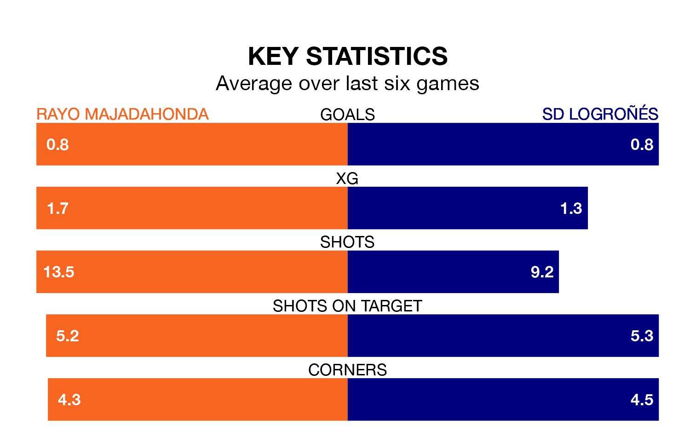

SD Logroñés make the journey to Miniestadio Cerro del Espino to play Rayo Majadahonda on Sunday looking to pick up points to end their three-game losing streak.
Logroñés's struggles have left them with six points from their last six Primera Division RFEF Group 1 matches, while their opponents have earned five from a possible 18.
Rayo are 18th in the table after 19 games, of which they have won three and drawn seven, earning 16 points.
Logroñés are two places ahead of the hosts in 16th, with six wins and one draw putting them on 19 points.
With 15 goals in 19 games so far this season, Rayo are scoring at below the league average rate with 0.8 goals per game. And they are conceding more than average, letting in 25 goals at a rate of 1.3 per game.
The away side are also below average scorers, with 0.9 goals per game, compared to a league average of 1.0. They have conceded 1.5 goals per game.
In the last three years, Rayo and Logroñés have played each other on three occasions. Rayo won two of them and Logroñés one.
Their last meeting was on September 24, when Rayo won 1-0 away.
Rayo's last match was on January 13, a 2-1 loss against Unionistas de Salamanca CF.
Logroñés lost 3-0 against SD Ponferradina last time out, on January 14.
Updated: 14:53 (UTC), 16/01/24